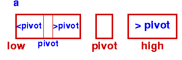

| Data Structures and Algorithms |
| 7.3 Quick Sort |
Quicksort is a very efficient sorting algorithm invented by C.A.R. Hoare. It has two phases:
This makes Quicksort a good example of the divide and conquer strategy for solving problems. (You've already seen an example of this approach in the binary search procedure.) In quicksort, we divide the array of items to be sorted into two partitions and then call the quicksort procedure recursively to sort the two partitions, ie we divide the problem into two smaller ones and conquer by solving the smaller ones. Thus the conquer part of the quicksort routine looks like this:
quicksort( void *a, int low, int high )
{
int pivot;
/* Termination condition! */
if ( high > low )
{
pivot = partition( a, low, high );
quicksort( a, low, pivot-1 );
quicksort( a, pivot+1, high );
}
}
|
Initial Step - First Partition |
|  Sort Left Partition in the same way |
To do this, we choose a pivot element and arrange that all the items in the lower part are less than the pivot and all those in the upper part greater than it. In the most general case, we don't know anything about the items to be sorted, so that any choice of the pivot element will do - the first element is a convenient one.
As an illustration of this idea, you can view this animation, which shows a partition algorithm in which items to be sorted are copied from the original array to a new one: items smaller than the pivot are placed to the left of the new array and items greater than the pivot are placed on the right. In the final step, the pivot is dropped into the remaining slot in the middle.
|
QuickSort Animation This animation was based on a suggestion made by Jeff Rohl; it was written by Woi Ang. |
|
Key terms |
| Continue on to Quick sort: Partition in place | Back to the Table of Contents |